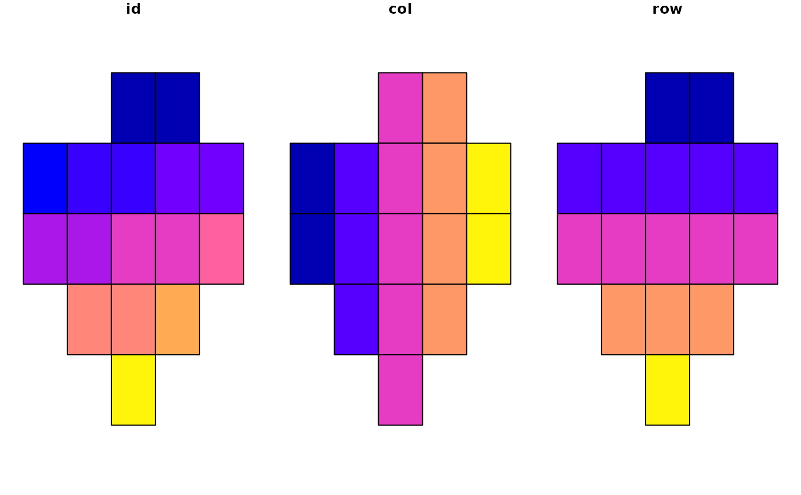
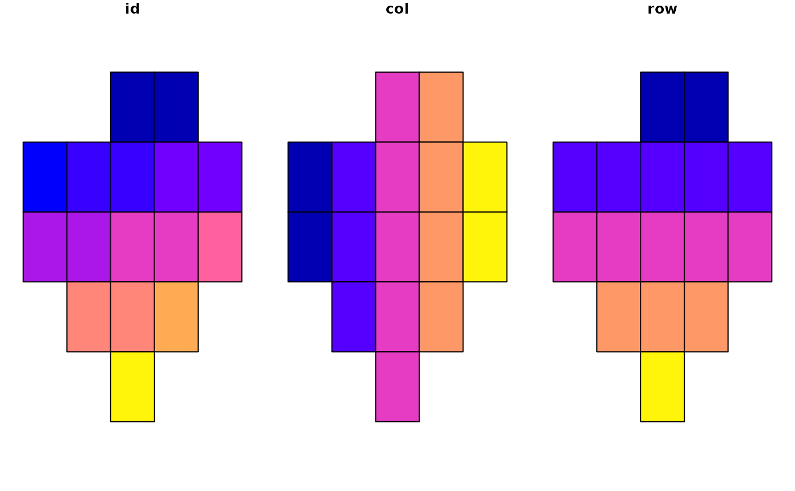

Create a grid with an id column and optionally a set number of columns and rows. This documentation is incomplete the function may change.
Usage
st_make_grid_ext(
x,
...,
unit = NULL,
crs = NULL,
ncol = NULL,
nrow = NULL,
n = NULL,
gutter = 0,
desc = FALSE,
cellsize = NULL,
what = NULL,
style = "rect",
.id = "id",
filter = FALSE,
trim = FALSE
)Arguments
- x
A
sf,sfc, orbboxobject, Default:NULL. Required.- ...
Arguments passed on to
st_bbox_extnudgePassed as to parameter
st_nudge()when notNULL. A numeric vector, asfobject, or any other object that can be converted to a simple feature collection withas_sfc()..distbuffer distance in units. Optional.
diag_ratioratio of diagonal distance of area's bounding box used as buffer distance. e.g. if the diagonal distance is 3000 meters and the "diag_ratio = 0.1" a 300 meter will be used. Ignored when
distis provided.allow_listIf
TRUE(default), allow sf list objects as an input and usepurrr::map()to apply the provided parameters to each object within the list to return as a new sf list object.aspAspect ratio of width to height as a numeric value (e.g. 0.33) or character (e.g. "1:3"). If numeric,
get_asp()returns the same value without modification.
- unit
Units for buffer. Supported options include "meter", "foot", "kilometer", and "mile", "nautical mile" Common abbreviations (e.g. "km" instead of "kilometer") are also supported. Distance in units is converted to units matching GDAL units for x; defaults to "meter"
- crs
Coordinate reference system of bounding box to return; defaults to
NULLwhich maintains the crs of the input object.- ncol, nrow
Used to set n if either are not
NULL; defaults toNULL. row and id are added as columns to the grid if they are provided.- n
If n is NULL and square is
TRUE, the grid is set automatically to be 10 cells wide, Default:NULL- gutter
Distance in units between each column cell; gutter effectively serves as a margin as the negative buffer is applied to all cells (including those at the edges of the grid).
- desc
If TRUE, reverse standard order of cell id numbering; defaults
FALSE- cellsize
numeric of length 1 or 2 with target cellsize: for square or rectangular cells the width and height, for hexagonal cells the distance between opposite edges (edge length is cellsize/sqrt(3)). A length units object can be passed, or an area unit object with area size of the square or hexagonal cell.
- what
"polygons", "corners", "centers"; set to centers automatically if style is "circle", "circle_offset" but a buffer is applied to return circular polygons.
- style
Style of cell to return with options including "rect", "square", "hex", "flat_top_hex", "circle", "circle_offset"
- .id
A name to use for the cell id column. Defaults to "id".
- filter
If
TRUE(or if trim isTRUE) filter grid geometry by x using st_filter_ext- trim
If
TRUE, x is trimmed to y withst_trim().
Examples
nc <- sf::read_sf(system.file("shape/nc.shp", package = "sf"))
# Make a 2 by 2 grid across a location with a 1000 meter gutter between each cell
plot(
st_make_grid_ext(
x = nc[24, ],
dist = 500,
unit = "meter",
ncol = 2,
nrow = 2,
gutter = 1000
)
)
 # Make a 5 by 5 grid with a 8.5 by 11 aspect ratio filtered to x
plot(
st_make_grid_ext(
x = nc[24, ],
asp = 8.5 / 11,
ncol = 5,
nrow = 5,
filter = TRUE
)
)

# Make a 4 by 5 grid of circles trimmed to x boundaries
plot(
st_make_grid_ext(
x = nc[24, ],
ncol = 4,
nrow = 5,
style = "circle_offset",
trim = TRUE
),
max.plot = 1
)
# Make a 5 by 5 grid with a 8.5 by 11 aspect ratio filtered to x
plot(
st_make_grid_ext(
x = nc[24, ],
asp = 8.5 / 11,
ncol = 5,
nrow = 5,
filter = TRUE
)
)

# Make a 4 by 5 grid of circles trimmed to x boundaries
plot(
st_make_grid_ext(
x = nc[24, ],
ncol = 4,
nrow = 5,
style = "circle_offset",
trim = TRUE
),
max.plot = 1
)